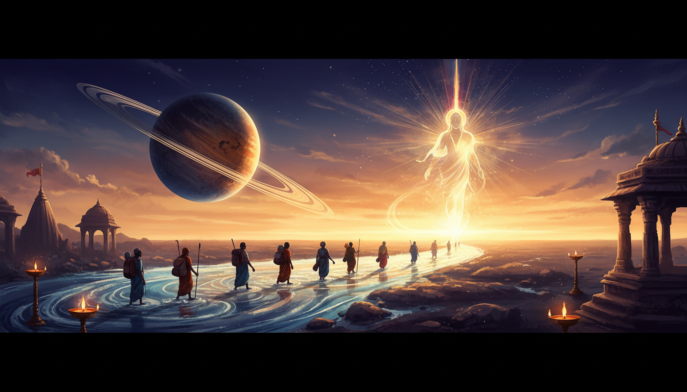

Introduction: The Bridge Between Cycles
Revati is the 27th and final Nakshatra, marking the absolute culmination of the zodiacal journey. In Vedic thought, it is described as the "last room where the soul sits" to check its luggage before embarking on a new incarnation. The name Revati translates to "The Wealthy One" or "The Prosperous One," but this wealth is not merely material; it is the spiritual Punya (merit) accumulated over countless lifetimes.

Positioned entirely within the last 13°20' of Pisces, Revati serves as the vital bridge between the 5th house of accumulated merit and the 12th house of Moksha (spiritual release). It governs our "ending style"—the specific way we close cycles, settle debts, and find completion. When this Nakshatra is prominent, life often presents incomplete stories—unfinished studies, delayed travels, or pending loans—that eventually find a graceful Tihai (final rhythm) through divine protection.
The Divine Guide: Meeting Pushan, the Protector of Paths
The presiding deity of Revati is Pushan, one of the twelve Adityas and the divine solar nourisher. Known as a Kavi (a King or Poet-Seer), Pushan is married to Sūryā, the daughter of the Sun. He is the celestial herdsman who ensures safe passage for all beings navigating the crossroads of life.
The Role of Pushan
- Protector of Travelers: He guards the literal and metaphorical roads, protecting travelers from bandits and wild beasts.
- Guide of the Lost: Pushan is invoked to bring back lost cattle and "lost people," returning the wandering soul to its true home.
- Psychopomp: He is the soul-guide who conducts the departed from this world to the next, possessing intimate knowledge of the paths between Earth and Heaven.
- The Internal GPS: Invoking Pushan through the mantra "Om Pusanaya Namah" acts as a subtle "Internal GPS," providing direction when one is confused about which path to take.
The Myth of the Toothless Deity
During the Daksha Yajna, the deity Rudra (Shiva) was excluded from the sacrifice. In his wrath, Shiva knocked out Pushan’s teeth as he attempted to eat the oblation. Because he is toothless, Pushan is offered soft foods like gruel or flour. This myth manifests in the Revati native as a profound connection to food, taste, and the sensory experience of eating. They have a refined "palate of the soul," often seeking pure Sattvic food or Prasad (sanctified food) to find emotional nourishment.
Symbols of Authority
Pushan rides a chariot driven by goats and carries specific tools for guidance:
- Golden axe: To clear obstacles from the path.
- Awl: For fine craftsmanship and precise direction.
- Goad: To urge and guide the "cattle" (our lower instincts) toward higher pastures.
Core Symbolism: The Fish, the Drum, and the Shakti
Revati’s symbolism reflects its location at the end of the Jala (water) sign of Pisces and its role in the rhythm of time.
- The Fish: Moving through the vast "misty sea" of Pisces, the fish represents navigation through emotional currents and adaptability.
- The Drum (Mridanga): This represents the final rhythm that closes a song. It symbolizes the silence that follows completion, preparing the soul for rebirth.
- Kshiradyapani Shakti: This is the "engine" of Revati—the power to nourish and provide prosperity. It is the ability to sustain others through the abundance of one's own spirit.
Essential Attributes
- Ruling Planet: Mercury (Budha - Intellect).
- Guna: Sattva (Purity and spiritual orientation).
- Element: Ether (Akash - Space and expansion).
- Varna: Shudra (Service-Oriented). This caste signifies that Revati’s "wealth" is realized through selfless service to the world.
Personality Blueprint: Compassion, Intuition, and the Peacemaker
Revati natives possess a mind that functions like a "radio antenna," picking up on subtle environmental signals and unspoken pain.
Positive Traits
- Compassion and Wisdom: They are the "peacemakers" of the family, often the ones who sit awake at night caring for sick family members.
- Artistic Authority: As a Kavi influence, they excel in music, literature, and film, using their "heroic attraction" to draw others toward healing.
- Deep Empathy: They have a natural kindness toward animals and vulnerable beings.
Challenges
- Escapism: When the world becomes too harsh, they may retreat into a fantasy world or a "misty" state of indecision.
- The Savior Complex: They often attempt to "rescue" troubled partners, leading to emotional exhaustion and the loss of healthy boundaries.
- Sensitivity: Prone to mood swings, they must learn to distinguish their own emotions from the "signals" they pick up from others.
The Four Padas: A Journey through Pisces
Revati is divided into four quarters, or Padas, each transitioning through a different element:
- Pada 1 (16°40' - 20°00' Pisces): Aries Navamsha
- Ruler: Mars | Element: Fire
- Focus: Energy and protection. These individuals are courageous, determined, and act as "spiritual warriors."
- Pada 2 (20°00' - 23°20' Pisces): Taurus Navamsha
- Ruler: Venus | Element: Earth
- Focus: Luxury and nourishment. It brings success in fine arts and a grounded connection to material beauty.
- Pada 3 (23°20' - 26°40' Pisces): Gemini Navamsha
- Ruler: Mercury | Element: Air
- Focus: Communication and intellect. These natives excel in logistics, writing, and the business of "connecting" people.
- Pada 4 (26°40' - 30°00' Pisces): Cancer Navamsha
- Ruler: Moon | Element: Water
- Focus: Deep Moksha and healing. This is the most sensitive quarter, often leading to profound mystical realization and emotional closure.
Practical Life Guide: Career, Relationships, and Health
Career & Success
Revati natives thrive in roles that guide, nourish, or transport.
- Professions: Logistics, shipping, aviation, healing, psychology, and NGO work.
- Collaboration: They harmonize with Rohini, Anuradha, and Uttarabhadrapada due to shared emotional depth.
- Challenge: They may find the fast-paced, dominant energies of Ashwini or Magha overwhelming and "too loud" for their gentle nature.
Relationship Dynamics
In love, Revati is devoted and unconditional. They seek a "fellow pilgrim" to travel with through life. However, they must resist the urge to "mother" their partners, which can erode mutual respect.
Health & Wellness: The Anatomical Connection
Revati rules the feet, toes, and the armpit region of Lord Vishnu (the Kaalpurusha). Health is often tied to "emotional digestion."
| Body Part / Issue | Preventative Measures & Logic |
|---|---|
| Feet, Toes, & Ankles | Foot massage with warm oil; grounding to combat "floaty" energy. |
| Armpits & Skin | Managing foot perspiration and "chills" through temperature regulation. |
| Digestion (IBS/Ulcers) | Eating soft, Sattvic foods; avoiding "emotional eating" when stressed. |
| Nervous System | Routine sleep and meditation to clear "antenna overload." |
Karmic Lessons: The Art of Letting Go
Revati carries "Pending Karma" regarding unfinished ancestral stories. This often manifests as:
- Ancestors who died during travel or migrated and never returned home.
- Family members cheated in foreign lands or workers who vanished.
- A personal history of "missing the train" by two minutes.
The Saturn Transit (May 17 – Oct 8, 2024)
During this period, Saturn moves through Revati, acting as a Karmic Audit. This is a time to face reality with brutal honesty, clearing old debts and restructuring your spiritual house. It is not a time for starting new projects, but for finishing what is half-done so you can enter the next cycle clean.
Actionable Remedies: Aligning with Pushan’s Grace
- Mantras: Chant "Om Namo Narayanaya" for protection. Use "Om Pusanaya Namah" specifically when you feel lost or need a "Subtle GPS" for a major decision.
- Seva (Service): Support travelers, migrants, and delivery workers. Feeding cows (Gau Seva) or street animals directly aligns you with Pushan’s role as the herdsman.
- Lifestyle: Practice a "Clean Food Day" once a week. Journal your life journey to provide structure to a watery mind.
Conclusion: Becoming the Wise Pilgrim
The ultimate path of Revati is to transform from a "confused wanderer" into a "wise pilgrim." By embracing humility and the Shudra spirit of service, the Revati native fulfills their highest potential: to serve, protect, and guide others.
As you navigate your final chapters, remember the Revati vow: "I will not die spiritually while traveling through life."
Key Takeaway
Revati is the Nakshatra of graceful endings. It teaches that true wealth is not the gold we carry, but the spiritual prosperity gained by finishing our karma with compassion, discrimination, and absolute trust in the Divine Guide.
Sources
19. [Rig Veda 6.53.8 \[English translation\]](https://www.wisdomlib.org/hinduism/book/rig-veda-english-translation/d/doc834305.html)
- Saturn Transit in Revati Nakshatra : Your Karmic Report Card is Here
- Revati Nakshatra in Vedic Astrology - Vedicgrace Institute of ...
- Saturn Transit in Revati Nakshatra 2026: Karmic Shifts for These Zodiac Signs - Astropatri
- Shani Jayanti 2026 Horoscope: Saturn's Revati transit remedies for all zodiac signs
- Shani Jayanti 2026 Date, Puja Time And Astrological Tips To Calm Saturn's Influence
- Revati Nakshatra Spiritual Journey: Path of the 27th Star | AstroSight
- Revati Nakshatra – ASTRO GIVA
- Revati Nakshatra: Guardian of Souls, Animals & Travelers | A&A
- Pushan: Significance and symbolism
- 27 • Revati • Pushan : r/NakshatraPadaChandras - Reddit
- Revati Nakshatra – Meaning, Traits & Significance
- Fact Sheets-Saturn (Shani) in Vedic Astrology - astrosutras.in
- Saturn in Revati – Astro Blogs
- Karmic Astrology: How Past‑Life Karma Is Reflected in Your Birth Chart
- Pushan - Wikipedia
- Ways to reduce your past life karmic debts according to Vedic astrology - The Times of India
- Saturn's Transit in Scorpio Navamsha 2026: Impact & Remedies - Astro Zindagi
- Saturn Transit in Pisces (2025–2027) - Astropatri
- 17 ways to please Saturn (Lord Shani) - Cosmic Insights
- These 3 mantras can reduce karmic debts and why? - The Times of India
- Saturn in Revati Nakshatra - Your Predictions and Remedies - align 27
- Vedic Remedies for Shani Graha | Indian Astrology predictions USA - Dixith INC
- Top Vedic Astrology Remedies for Cleansing Past Life Karma
- Pushan: Vedic Deity of Guidance and Nourishment | PDF | Mythology - Scribd
- 27 • Revati • Pushan : r/NakshatraPadaChandras - Reddit
- Revati Nakshatra – Meaning, Lord, Rashi & Characteristics - Astropatri
- Pushan - Revati Nakshatra - Cosmic Insights
- The Sad Story of Pushan - Amar Chitra Katha
- Shani Transit 2026: Saturn enters Revati Nakshatra, how it could impact the zodiac signs
- Shani - the Elusive God - Dolls of India
- History and Birth Story of Shani Dev - The Times of India
- Comprehensive Guide to Nakshatras | PDF | Hindu Astrology | Devi - Scribd
- Native European - India
- Saturn enters Revati Nakshatra (May 16 – Oct 10, 2026) : r/Nakshatras
- Revati Nakshatra - Learn Vedic Astrology
- Revati Nakshatra and Pushan Spiritual Significance - ZODIAQ
- 100 Predictive Techniques of Each Nakshatra Part 3 (Mula – Revati) : Vedic Astrology by Saket Shah (2023) - Jyotish eBooks
- Vedic Astrology 1 | Jai Guru Dev - WordPress.com
- Moola Nakshatra Characteristics Overview | PDF | Love | Religion And Belief - Scribd
- Mantras to Calm Saturn's Influence | PDF | Planets In Astrology | Kali - Scribd
- Shani Mantras to Reduce the Malefic Effect of Saturn | Stotram | Kavacham | Ashtakam & Mangalam | - YouTube